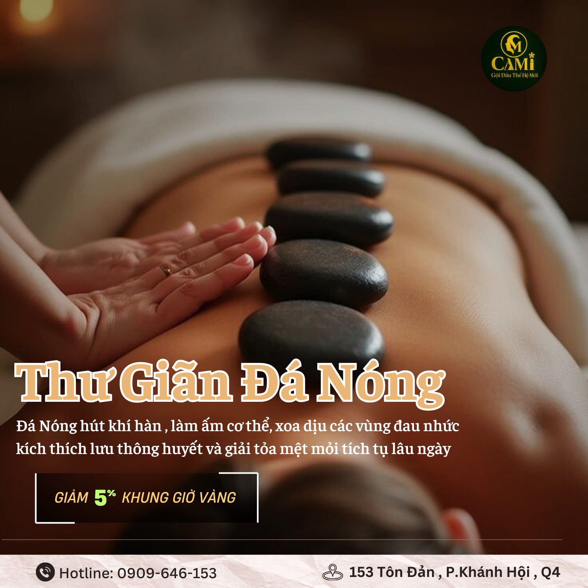

Cơn đau cổ vai gáy không đến bất ngờ. Nó đã báo hiệu cho bạn nhiều tuần — bằng những dấu hiệu nhỏ mà bạn cho là "chắc do hôm nay mệt". Rồi một sáng, bạn xoay cổ và nghe tiếng "rắc", cứng đờ cả buổi. Lúc đó, cơ đã căng đến giới hạn.
Cơ thể luôn cảnh báo trước. Vấn đề là chúng ta thường phớt lờ cho đến khi cơn đau buộc mình phải dừng lại.

Vì Sao Cổ Vai Gáy "Kêu Cứu" Mà Bạn Không Nghe?
Nhóm cơ vùng cổ vai gáy — đặc biệt là cơ thang (trapezius) — hoạt động âm thầm suốt cả ngày để giữ đầu bạn thăng bằng. Khi bạn cúi nhìn màn hình, chúng phải gồng lên gấp nhiều lần bình thường.
Ban đầu, cơ chịu đựng được và tự phục hồi sau khi nghỉ. Nhưng khi áp lực lặp lại ngày qua ngày, cơ mất dần khả năng buông ra. Đó là lúc những dấu hiệu dưới đây xuất hiện — lời "kêu cứu" đầu tiên.
5 Dấu Hiệu Cổ Vai Gáy Đang Cầu Cứu Bạn
01 · Cúi điện thoại 2 giờ là cổ vai gồng cả ngày
Bạn lướt điện thoại buổi tối, sáng dậy cổ đã ê ẩm. Đây là dấu hiệu cơ không còn tự phục hồi qua đêm — cơn căng đang tích lũy thành mãn tính.
02 · Làm việc quá lâu, vai gù – cổ căng cứng
Sau vài giờ ngồi làm, vai bạn tự động nhô lên gần tai và cổ cứng lại. Cơ thể đang "khóa" tư thế bảo vệ — và mỗi lần như vậy, sợi cơ càng co rút.
03 · Lưng thẳng chưa đủ, cổ vai vẫn cần được nghỉ
Bạn đã cố ngồi thẳng, mua ghế công thái học, nhưng vai gáy vẫn mỏi. Vì điều chỉnh tư thế chỉ ngăn tổn thương mới — nó không giải phóng phần cơ đã căng cứng từ trước.
04 · Mắt dán màn hình, cổ chịu tận cùng
Tập trung nhìn màn hình khiến bạn quên cả việc chớp mắt, nói gì đến đổi tư thế. Cổ giữ nguyên một góc hàng giờ — áp lực dồn vào đúng một điểm cho tới khi nó đau nhói.
05 · Đau đầu sau gáy, chóng mặt không rõ lý do
Đây là dấu hiệu muộn và đáng lưu ý nhất. Khi cơ gáy căng cứng chèn ép mạch máu và dây thần kinh, cơn đau lan lên đầu — nhiều người nhầm là đau đầu thông thường mà không biết gốc rễ nằm ở cổ vai gáy.
Khi cúi đầu góc 45 độ để nhìn điện thoại, cột sống cổ phải chịu áp lực tương đương 22kg — gần bằng một đứa trẻ 7 tuổi ngồi trên gáy bạn. Nhân con số đó với vài giờ mỗi ngày, bạn hiểu vì sao cổ vai gáy "kêu cứu".
Nếu Phớt Lờ, Điều Gì Sẽ Xảy Ra?
Một cơn đau cổ vai gáy không được xử lý đúng cách không tự biến mất — nó tiến triển:
- Giai đoạn 1: Căng mỏi thoáng qua, nghỉ ngơi là đỡ
- Giai đoạn 2: Đau âm ỉ hàng ngày, cứng cổ mỗi sáng, giảm biên độ xoay cổ
- Giai đoạn 3: Đau lan lên đầu, tê bì cánh tay, mất ngủ vì không tìm được tư thế nằm thoải mái
- Giai đoạn 4: Chèn ép rễ thần kinh cổ — lúc này cần can thiệp y tế, chi phí gấp hàng chục lần phòng ngừa
Điều đáng nói: bạn hoàn toàn có thể dừng chuỗi này lại ngay từ giai đoạn 1 hoặc 2, chỉ với việc chăm sóc cơ đúng cách và đều đặn.
Nuông Chiều Cổ Hôm Nay, Bạn Khỏe Ngày Mai
Cách hiệu quả nhất để "trả lời" tiếng kêu cứu của cổ vai gáy là giúp cơ học lại phản xạ thư giãn tự nhiên. Tại CAMI, điều này được thực hiện qua kỹ thuật massage bấm huyệt Shiatsu — tác động áp lực điểm sâu vào huyệt đạo, giúp sợi cơ nhận tín hiệu "an toàn để buông" và giãn ra từ từ.
Kết hợp với gội đầu dưỡng sinh và liệu pháp đá nóng, bạn không chỉ giải phóng cơn đau vai mà còn thư giãn toàn bộ hệ thần kinh — nền tảng để ngủ ngon và phục hồi thật sự.
- Người ngồi làm việc trên 5 giờ mỗi ngày
- Người thường xuyên cúi nhìn điện thoại, laptop
- Người bị đau đầu sau gáy, cứng cổ mỗi sáng
- Người muốn phòng ngừa trước khi cơn đau trở thành mãn tính
Đừng Đợi Đến Khi Cổ "Hét Lên"
Massage Shiatsu cổ vai gáy kết hợp gội đầu dưỡng sinh · Chỉ từ 149K · 153 Tôn Đản, Quận 4
Đặt Lịch Qua Zalo NgayCâu Hỏi Thường Gặp
Đau cổ vai gáy có nguy hiểm không?
Đau cổ vai gáy ở giai đoạn đầu không nguy hiểm, nhưng nếu để kéo dài không xử lý có thể tiến triển thành đau mãn tính, chèn ép dây thần kinh, gây tê bì tay và đau đầu thường xuyên. Nên can thiệp sớm ngay khi mới xuất hiện dấu hiệu căng cứng.
Ngồi làm việc bao lâu thì hại cổ vai gáy?
Giữ nguyên tư thế cúi đầu nhìn màn hình hoặc điện thoại trên 60 phút liên tục đã bắt đầu gây căng cơ vùng cổ vai gáy. Nên đứng dậy vận động nhẹ mỗi 30 đến 45 phút để giảm áp lực lên cột sống cổ.
Cúi nhìn điện thoại có thật sự hại cổ không?
Có. Khi cúi đầu góc 45 độ để nhìn điện thoại, cột sống cổ phải chịu áp lực tương đương khoảng 22kg — gấp nhiều lần trọng lượng đầu bình thường. Đây là nguyên nhân hàng đầu gây đau cổ vai gáy ở người trẻ hiện nay.
Làm gì khi cổ vai gáy căng cứng mỗi sáng?
Căng cứng cổ vai gáy mỗi sáng cho thấy cơ đã không thể tự phục hồi qua đêm. Nên kết hợp điều chỉnh tư thế ngủ, giãn cơ nhẹ buổi sáng và massage bấm huyệt Shiatsu định kỳ để cơ học lại phản xạ thư giãn tự nhiên.